SuMPO 動的LCA調査報告書
フランスRE2020における動的LCAの政策的背景・技術的枠組みに関する調査。 調査ブロック①（政策及び制度調査）と調査ブロック②（技術及び手法調査）の 全成果物をHTML形式で参照できます。
92.8
調査ブロック①
PMO平均スコア
PMO平均スコア
92.3
調査ブロック②
PMO平均スコア
PMO平均スコア
92.6
両ブロック
統合スコア
統合スコア
7
成果物数
（MD報告書）
（MD報告書）
調査ブロック① 政策及び制度調査（No.1〜14）
No.1-3・8
RE2020全体構造
RE2020の3評価指標・seuil値・Level(s)・EN15978との関係。
PMO 94.0 / 100
No.9-11
動的LCA要件整理
FRE2020(t)=1-0.00842tの制度要件・対象建物・段階施行。
PMO 92.0 / 100
No.12-14
生物由来炭素・炭素貯蔵
StockC算定・評価期間DO=100年の根拠・解体シナリオ。
PMO 92.0 / 100
No.4-7
制度導入背景（v4統合）
4条件収束・Loi Climat・産業調停・Rivaton 12勧告。
PMO 93.0 / 100
調査ブロック② 技術及び手法調査（No.15〜23）
No.15-17
動的LCAの理論的枠組み
DCF導出・100年評価期間の科学的根拠・ISO 21391-1との比較。
PMO 92.8 / 100
No.18-20
評価指標及び算定方法
係数0.00842の導出・炭素循環・放射強制力との関係。
PMO 93.0 / 100
No.21-23
建築物LCA位置付け
Elodieエコシステム・静的LCAのハイブリッド設計・Ic開示制度。
PMO 91.2 / 100
PMO評価
PMO
調査ブロック① PMO評価
ch01〜ch04 各版のスコア履歴・v4最終判定。統合スコア 92.8点。
PMO
調査ブロック② PMO評価
tech01〜03 v2 初回評価。全No.15-23カバー確認。統合スコア 92.3点。
📊 グラフギャラリー（全12図）
Jupyter Notebook（dynamic_lca_visualization.ipynb）および追加分析から生成。
各図をクリックすると拡大表示できます。
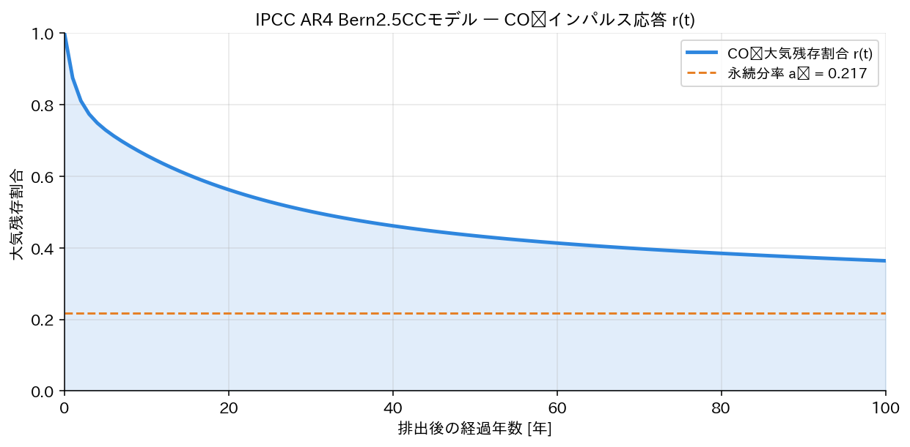
Fig.01 Bern CO₂インパルス応答
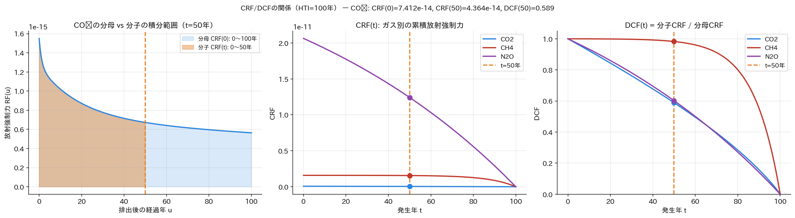
Fig.02 CRF/DCF関係（3パネル）
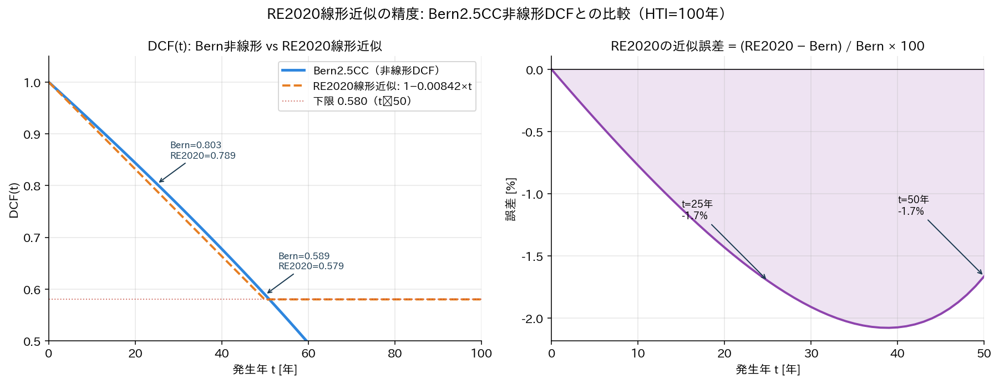
Fig.03 RE2020近似精度比較
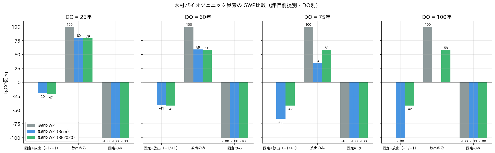
Fig.04 木材GWP比較（DO別）
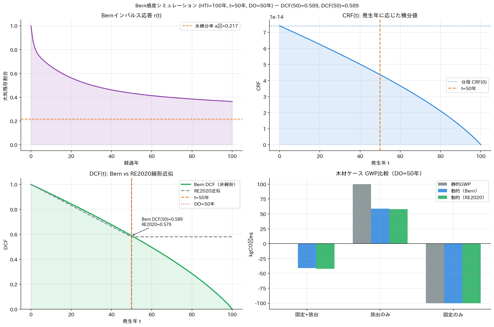
Fig.05 Bern感度シミュレーション
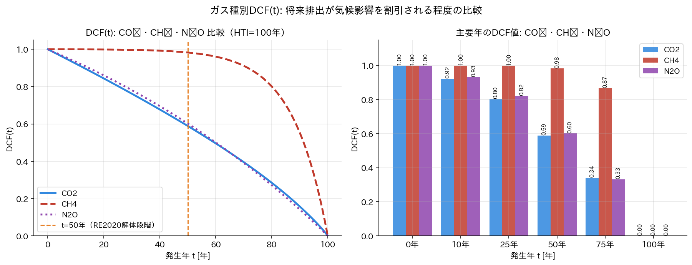
Fig.06 CO₂/CH₄/N₂O DCF比較
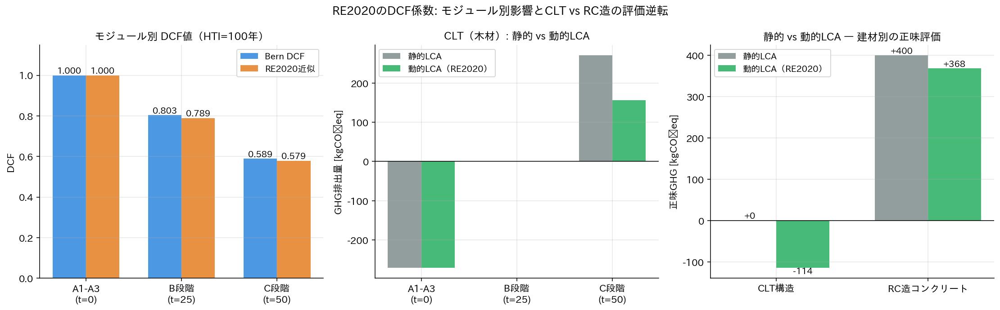
Fig.07 モジュール別DCF・CLT vs RC
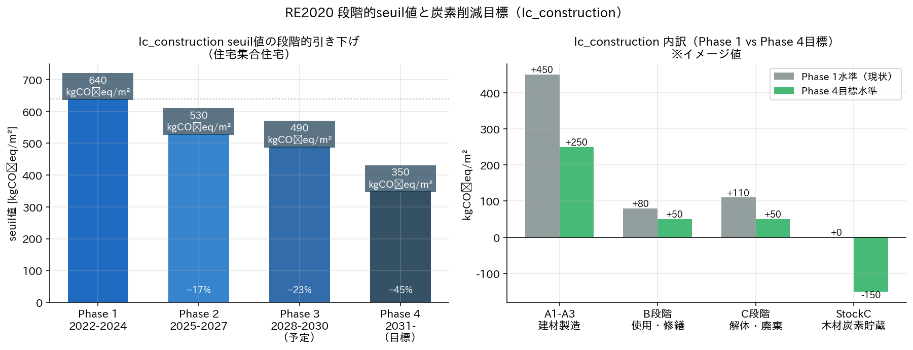
Fig.08 RE2020 seuil値タイムライン
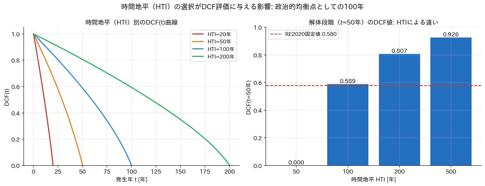
Fig.09 時間地平（HTI）の影響
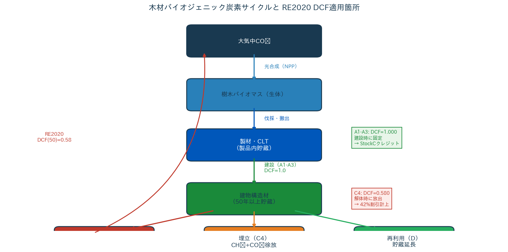
Fig.10 バイオジェニック炭素サイクル
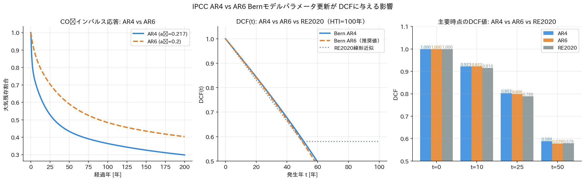
Fig.11 AR4 vs AR6 パラメータ比較
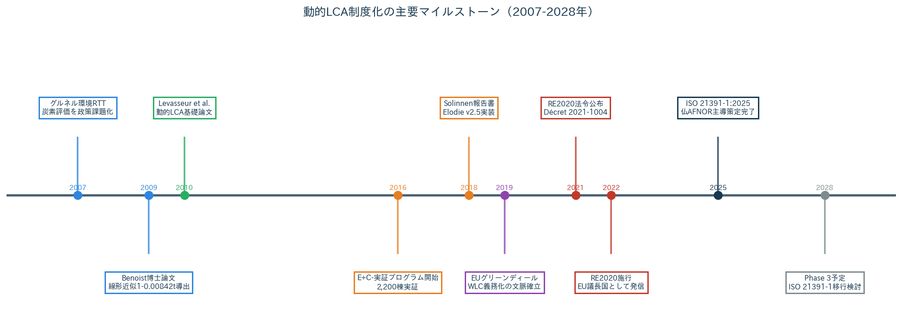
Fig.12 制度化タイムライン